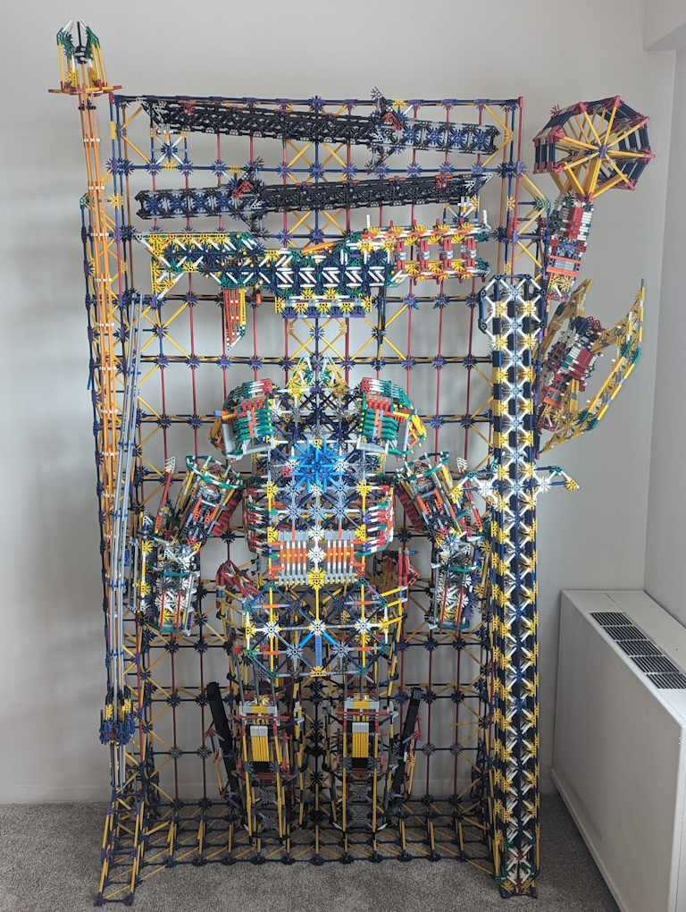

Portfolio
My portfolio includes the other stuff here, as well as many of my personal projects: Bukkit Plugins
I have a few plugins; here's a list of the important ones:TreeFeller
Cuts down a whole tree at once. You've probably seen one of these before, but maybe not one this configurable.
ResourceSpawner
Randomly generates temporary resource nodes and other structures in an existing world